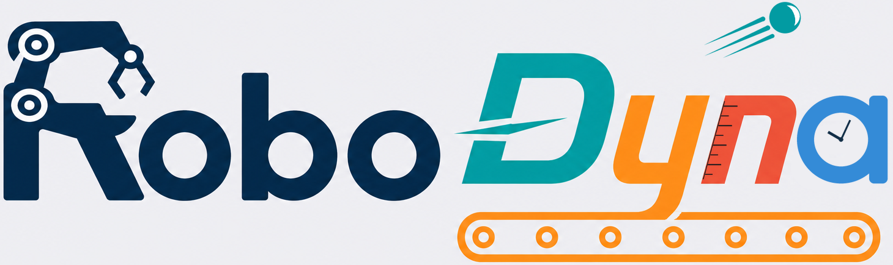
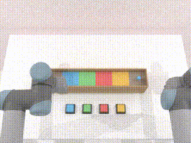
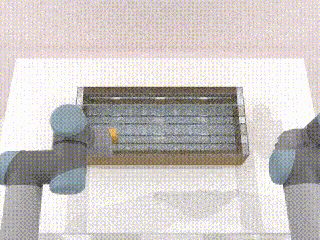
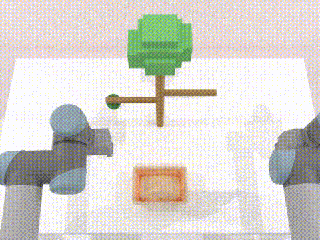
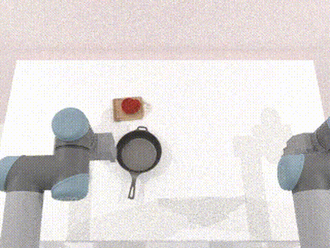
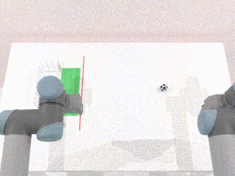
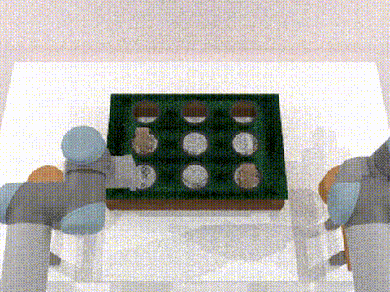

Time-evolving scenes
Targets move, belts run, timers advance, and objects change state at every physics step.

RoboDyna is a dual-arm robotic manipulation benchmark for scenes that keep changing: objects fall, move, cook, ripen, and distract the robot while it acts.
The suite tests perception, prediction, timing, and closed-loop control under changing physical state—not static pick-and-place geometry alone.
Targets move, belts run, timers advance, and objects change state at every physics step.
23 Base tasks each include Default, Opt 1, Opt 2, and Opt 1+2 conditions; 12 Household tasks add grounded scenes.
Human experiments and policy evaluation share fixed, expert-validated seeds for each task and scenario.
All media below is stored with this documentation site under docs/final_task_demos.

Time the control of trapdoors as marbles pass overhead.

Intercept cuboids during brief pop-up windows.

Choose a ripe apple while its visual state evolves over time.

Cook to a target doneness and remove the steak at the right time.

Block a moving shot before the deadline.

Strike moving moles while avoiding a distractor.

Heat milk, then turn the stove off before it overflows.

Push a pillow under a tipping cup before impact.

Contain a spreading spill before it reaches a laptop.
git clone https://github.com/EAI-RSM/RoboDyna.git
cd RoboDyna
conda activate robodyna
bash script/install_robodyna.sh
# Explore the benchmark
python interactive/robodyna_gui.py